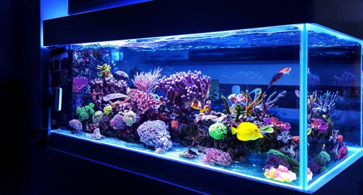

AXOLOTL

Axolotls are cute but critically endangered creatures. This page will educate you about the basics of axolotl care. It will cover important subjects such as needed materials, cycling, fungus treatment, food, and survival.
Axolotls are carnivores, meaning that they only eat meat.
Worms contain all the nutrients for your axolotl, but not all worms (e.g. blood worms) are nutritious and should only be considered as a treat.
For axolotl babies, you should start with baby brine shrimp, daphnea and then blood worms as much as they want to eat.
Once they're around 2 months old you want to begin giving them dendrobaena worms, earthworms or blood worms twice a day. Chop them into pieces as small as the distance between your axolotl's eyes, as they will be way too for your axolotl otherwise.
You can feed adult axolotls every other day with dendrobaena worms, pellets (8 pellets) or earthworms(2 earthworms).
There's also the dry food option, for example Hikari Sinking Carnivore Pellets. You can also try Grub pie by Repashy, although it may stink when you make it.
treats you can give your axolotl blood worms, river shrimp (ghost or cherry shrimp) or fresh water prawns. Salmon is also a good treat, but be careful, they must have no salt added and not be smoked. On top of that you should also always freeze the salmon for at least 30 days to kill bacteria, then simply place a frozen piece in a cup with some tank water and let it defrost before giving it to your axolotl, same applies to frozen blodd worms.
Any mammalian meat, poultry or meal worms, they can barely digest it or not at all. In the end there is a lot of safe options available and as usual. If you have any doubt about something just don't feed, better be safe than sorry.
This card mentions the materials you need to start your axolotl aquarium.
Keep in mind that you have to set up the aquarium at least 3 weeks before getting your axolotl, as cycling takes 3 to 8 weeks.
It is recommended to buy a 75L (20 gallons) aquarium and add an additional 37L (10 gallons) per axolotl if you want more than one. We also recommend buying a long aquarium instead of a large one. The difference is that long aquariums have more width and depth than height compared to large ones.
Any type of filtration is fine, as long as the water flow is kept to a minimum as axolotls don't like much water flow. We recommend you to buy a filter that can process twice your aquarium's capacity (e.g. if you have a 100L aquarium, buy a 200L capacity filter.) Sponge filters are highly recommended for axolotls, they provide a good biological filtration and they have no water flow.
or axolotls under 13cm (5') bare bottom is the way to go, after that you can add fine sand so they can grip onto something when they walk. DO NOT put gravel or pebbles in the aquarium. Any pebbles or rocks should be at least twice the size of your axolotl's head as axolotls can eat them by accident and die. Some people also use fake grass, but make sure it's aquarium safe if you want to use this.
Axolotls need at least two hides in the aquarium. It make them feel safe and they can rest there. Make sure there's no harsh edges and sand them down if possible. Axolotls have really fragile skin, a little pointy corner can hurt them. As for plants it's up to you if you want fake or live but they have less chance to get hurt by live plants. If you choose live plants make sure to take those who don't require a lot of light.
Axolotls don't have eyelids, so a bright light can be really hard on them. No light is the way to go but if you really want a light, consider taking one that is not too bright and provide your axolotl a lot of hides and shadow area.
Not necessary but recommended. An air stone or blubbler will help oxygenate the water and break the water surface for water movement. Some axolotls even like the bubbles. f
Your tap water probably contain Chlorine and/or Chloramine. The safest water conditioner I know is Seachem Prime. If you use another dechlorinator, make sure to check the ingredients on the product page. You want to know if they use iodine or aloe vera which are harmful to axolotls.
What you want is a proper kit with drops like the API Freshwater Master Test Kit, you will need it more than you think, plus you can pretend to be a mad scientist and that is priceless! You don't want the Strips water test, they are inaccurate. The first thing you want to know when your axolotl has any trouble is your parameters. pH, ammonia, nitrite, nitrate. You always want your parameters to be as following:
pH: between 7 and 8.2
ammonia: 0
nitrite: 0
nitrate: between 10 and 20
Water quality is essential for axolotls as they breath through their skin and gills.
Ideal temperature for axolotls is between 16°C and 18°C (60°F and 65°F). Until 20°C (68°F) it's ok but not ideal and over that it's gonna stress your axolotl. At 24°C (75°F) and over your axolotl is most likely gonna die if kept under those temperature for too long. Always have a temperature monitor on your tank so you can see directly if anything is wrong.
The best way to keep your tank safe from temperature swing and from warming up is a water chiller. It's really hard to always stay between those temperatures without a water chiller. It does cost a lot but I can assure you it is worth all the money.
I know it's a strange one but it is soo useful. A turkey baster will help you spot clean your axolotl's waste or catch back a dendro worm or pellet without getting your hands wet.
Like the turkey baster, the siphon pump is a must have. It will save you when the water change time is gonna come plus you can also clean the bottom of your tank with it.